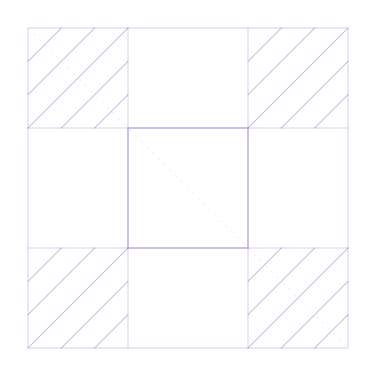

Error 404خطأ 404
We could not find that pageلم نعثر على هذه الصفحة
The link may be old or mistyped. Start from the homepage, or email us at info@alkhawarizmi.aiقد يكون الرابط قديماً أو خاطئاً. ابدأ من الصفحة الرئيسية، أو راسلنا على البريد: info@alkhawarizmi.ai
Back to the homepageالعودة إلى الصفحة الرئيسية